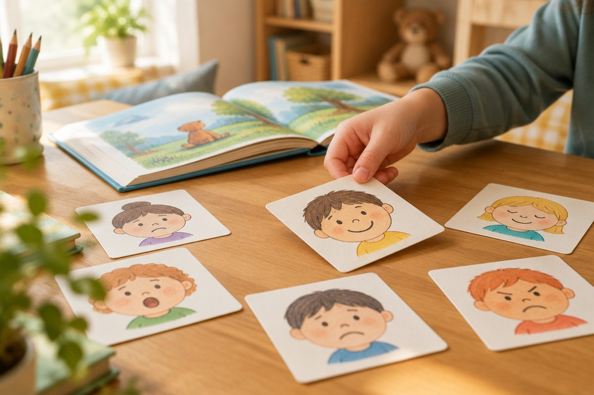

이야기 속 인물은 지금 어떤 마음일까?

이야기 속 인물은 “나 지금 속상해.”라고 직접 말하지 않을 때가 많아요. 그래도 인물의 말과 행동을 잘 살피면 그 마음을 알아챌 수 있어요.
인물의 말과 행동에 마음이 담겨 있어요
인물의 마음은 인물이 하는 말, 행동, 표정에 드러나요. 발을 동동 구르거나 고개를 푹 숙이는 행동에도 마음이 숨어 있어요.
인물이 어떤 말투로 말하는지도 살펴보세요. 같은 말이라도 큰 소리로 외치는지, 작게 중얼거리는지에 따라 마음이 달라요.
“에이, 또 졌잖아!” 준이는 공을 바닥에 던지고 씩씩거렸어요. → 말과 행동을 보니 준이는 속상하고 화가 난 마음이에요.
인물이 처한 상황을 살펴요
인물에게 어떤 일이 일어났는지 생각해 보세요. 기다리던 생일 선물을 받았는지, 아끼던 물건을 잃어버렸는지에 따라 마음이 달라져요.
그리고 “내가 저 인물이라면 어떤 마음일까?” 하고 나와 견주어 생각해 보면 마음을 짐작하기 쉬워요.
상황: 이사 가는 날, 단짝 친구와 헤어지게 되었어요. → 나라면? 슬프고 서운할 것 같아요.
마음을 나타내는 말을 알아 두어요
짐작한 마음을 말할 때 ‘좋다’, ‘나쁘다’만 쓰지 말고 알맞은 낱말을 골라 써 보세요. 마음을 더 정확하게 나타낼 수 있어요.
기분 좋은 마음, 기분이 좋지 않은 마음을 나타내는 말이 아주 많아요.
기분 좋은 마음: 기쁘다, 설레다, 뿌듯하다, 반갑다, 고맙다 기분이 좋지 않은 마음: 속상하다, 서운하다, 억울하다, 걱정스럽다, 부끄럽다
인물의 마음은 바뀌기도 해요
이야기가 흘러가면서 인물의 마음이 바뀌기도 해요. 처음, 가운데, 끝에서 인물의 마음이 어떻게 달라지는지 따라가 보세요.
마음이 바뀐 까닭을 찾으면 이야기를 더 깊이 이해할 수 있어요.
처음: 발표 순서를 기다리며 가슴이 두근거렸어요(떨림). → 끝: 발표를 마치자 친구들이 손뼉을 쳐 주었어요(뿌듯함).
핵심 낱말
- 인물
- 이야기에 나와서 말하고 행동하는 사람이나 동물
- 짐작
- 사정이나 형편을 어림잡아 헤아림
- 서운하다
- 기대하던 대로 되지 않아 마음이 섭섭하다
- 뿌듯하다
- 기쁨이나 자랑스러움이 마음에 가득하다
- 억울하다
- 잘못한 것 없이 꾸중을 듣거나 피해를 입어 속상하다
한 줄 정리
- 인물의 마음은 말, 행동, 표정에 드러나요.
- 인물이 처한 상황을 살피고 ‘나라면 어떨까?’ 생각하면 마음을 짐작하기 쉬워요.
- 기쁘다, 서운하다, 뿌듯하다처럼 알맞은 말로 마음을 나타내고, 마음의 변화도 따라가 봐요.
학교 교육과정 연결
- [4국05-01] 인물과 이야기의 흐름을 중심으로 작품을 감상한다.